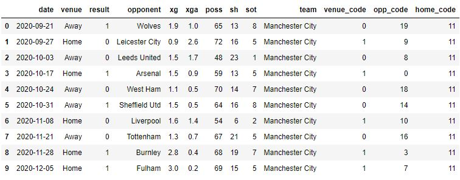
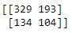

Neural Networks
Analyses: NN
Neural networks are a method in artificial intelligence that teaches computers to process data. It reflects the behavior of a human brain which allows computers to recognize patterns and use it to solve machine learning problems. Neural networks are comprised of node layers. They contain an input layer, and an output layer with one or more hidden layers in between. The nodes are connected to other nodes, and they have a weight and threshold associated with them. Each node performs a task and provides an output. This output is then passed through an activation function, which determines the output. If that output exceeds the threshold, then it is passed on to the next layer as an input.
For our project we will use the premier league data, which contains information about the matches between different teams and their outcomes. For this we shall assign a code to each team since we need numerical value for the NN model. Using this we shall try to make a basic prediction on the outcome and see how the NN model performs.
Dataset:
Coding:
Conclusion:
Confusion Matrix:
After running the NN we get an accuracy of 57%. Which is quite low, we could have improved this by using more complex neural networks with more variables. Just using the teams and the results between them doesn’t give our model too much information, and in each season two teams face each other only twice so there is very little information. If the two matches were won by both the teams in different occasion, then there is only 50% chance that our model can predict the output. We should consider using data from previous seasons and some stats of the teams to get higher accuracy.